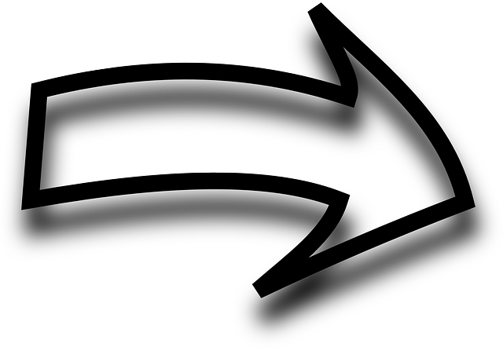

<section id="tutorial">
    <div id="story">
        <p>Eine Analyse von Elena Erdmann und Maria Mast, 9. Mai 2019</p>
        <p>https://www.zeit.de/wissen/umwelt/2019-05/umweltschutz-artenschutz-klimawandel-loesung</p>
        <p >
            Umwelt-, Klima- und nun Artenkrise! Unlösbar? Nein, weil alles zusammenhängt. Genau deshalb hilft es, Plastik zu meiden, weniger zu fliegen und politisch Druck zu machen.
            <br>

            Umweltschutz: Der Meeresspiegel steigt und zerstört schon heute Lebensräume. Klimawandel und Artensterben gehören zusammen.
            Der Meeresspiegel steigt und zerstört schon heute Lebensräume. Klimawandel und Artensterben gehören zusammen.
           Dem Planeten ging es schon mal besser. Wo man derzeit auch hinschaut, alles ist dabei, zu kollabieren. Weltweit verseuchen Plastik und Müll Flüsse, Seen und das Meer. Die Erde erwärmt sich seit Jahren zu schnell. Deutschland trocknete zuletzt wieder bis zur Brandgefahr aus. Und allein das, was der Mensch im Schnitt noch immer an Fleisch pro Jahr isst, verschärft die Klimakrise stetig weiter – von unseren Billigflugreisen gar nicht zu reden. Diese Woche der nächste Schock: 1.000.000 Tier- und Pflanzenarten könnten für immer verschwinden. Stetig warnen Wissenschaftlerinnen und Forscher: Wir müssen handeln, jetzt!
            <br>
            <br>
            Umweltkrise, Klimakrise, Artenkrise – wo anfangen und wie? Das Gefühl, dass eine Krise auf die nächste folgt, hat sich festgesetzt. Das überfordert, dabei hat das Umdenken längst begonnen: Viele Menschen meiden unnötige Plastikverpackungen, ernähren sich vegan oder bestellen in der Kantine zumindest manchmal die vegetarischen Spaghetti bolognese. Wir haben den Jutebeutel in der einen Hand und den Coffee-to-go-Mehrwegbecher in der anderen. Seit Monaten streiken Zehntausende junge Menschen jeden Freitag für den Klimaschutz. Und es wird über eine Steuer auf CO2 diskutiert.
            <br>

            <h2>   KLIMAWANDEL UND ARTENSCHUTZ:
            Unser Planet hat ein Problem</h2>
        <br>

            Plastik im Meer:
            Die größte Müllkippe der Welt ist gut versteckt
            Klimawandel:
            Wenn Klimaforscher die Welt regieren würden
            Umweltschutz:
            Operation Weltrettung erreicht das nächste Level
        Wenn wir weitermachen wie bisher, wird das nicht reichen. Statt alle Krisen getrennt zu betrachten, sollten wir uns klarmachen: Am Ende sind sie alle Teil eines einzigen großen Problems. Der gesamte Planet ist in Gefahr, die meisten Krisen bedingen einander. Die gute Nachricht: Wer anfängt zu handeln, hilft bei der Lösung.
        <br>


<br>
         <h2> Wir sind ein Teil von allem</h2>
        <br>
        Mikroplastik verändert Ökosysteme
        Zu dem Problem, das wir mit unserem Planeten haben, gehört aber noch mehr. Für das rapide Artensterben ist der Klimawandel eine der entscheidenden Ursachen. Problematisch ist aber nicht nur, dass wir zu wenig tun, sondern auch, dass wir zu viel tun: Inzwischen hat der Mensch drei Viertel der Landfläche und zwei Drittel der Meere verändert, durch Müll, Schrott, Öl und giftige Altlasten. In das größte Ökosystem unserer Erde, die Ozeane, werfen wir jedes Jahr Millionen Tonnen Kunststoff und töten damit geschätzte 100.000 Meerestiere, wie Wale oder Delfine, und noch weit mehr Seevögel (Butterworth et al.: Untangled – Marine debris, 2012, PDF). Sie verhungern mit vollem Magen oder verletzen sich an den verschluckten Plastikteilen.
        Auch die Ozeane brauchen wir. Lebewesen wie Plankton, Mikroben und Algen produzieren beispielsweise bis zu 70 Prozent des Sauerstoffs, den wir atmen. Was der Plastikmüll genau mit ihnen macht, ist nicht klar. Sicher aber ist, dass alles, was im Meer landet, irgendwann wieder bei uns ankommt. Eben auch winzig kleine Plastikteilchen. Mikroplastik, das sich im gesamten Wasser bis auf den Meeresgrund verteilt. Geschluckt und aufgenommen von Fischen und Meeresfrüchten landet es irgendwann auf unseren Tellern.
        </p>
    </div>
    <h1>Was könnt ihr dazu beitragen?</h1>
    <h1>Sammelt Plastik!</h1>
</section>